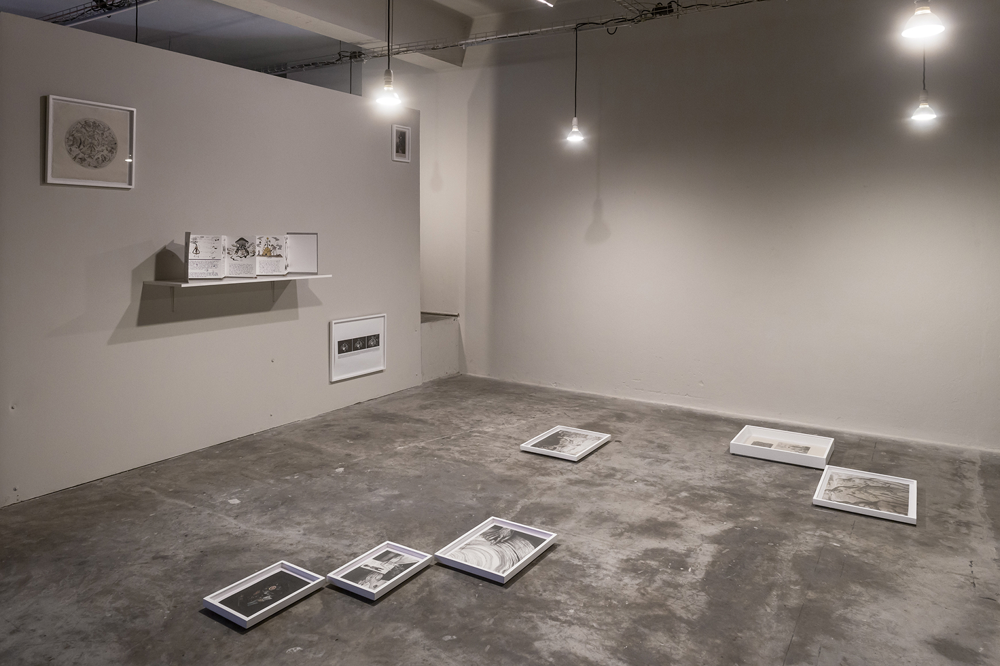
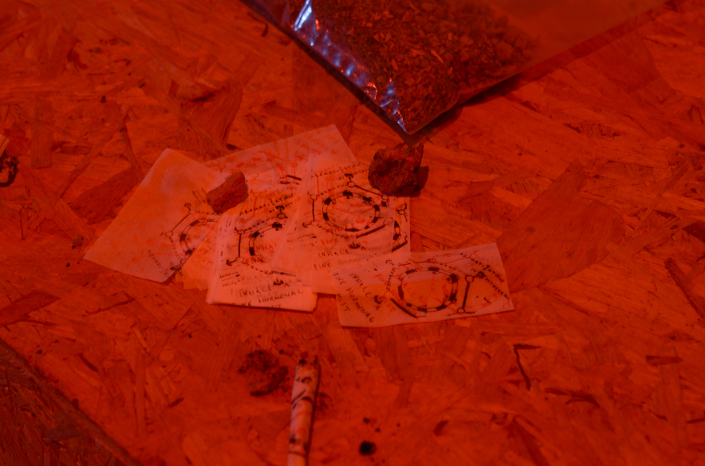
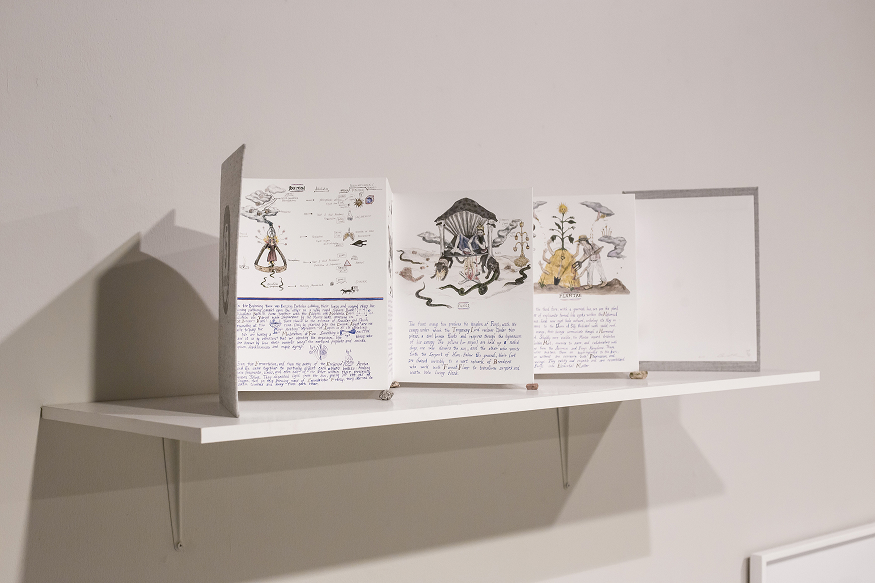
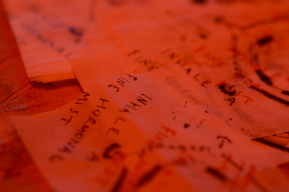
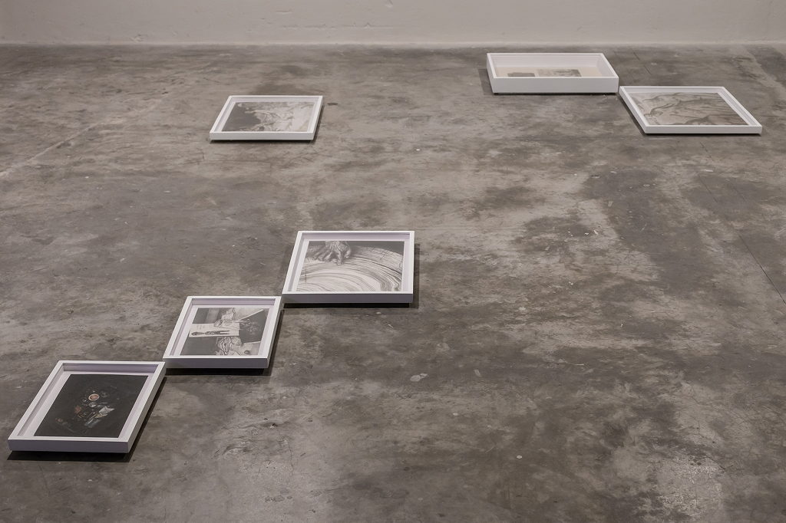
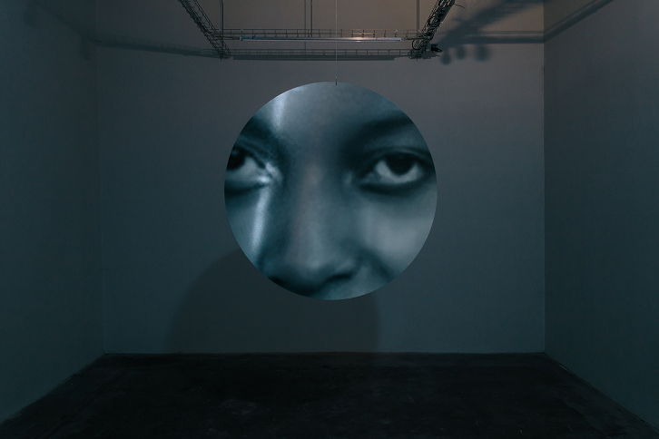
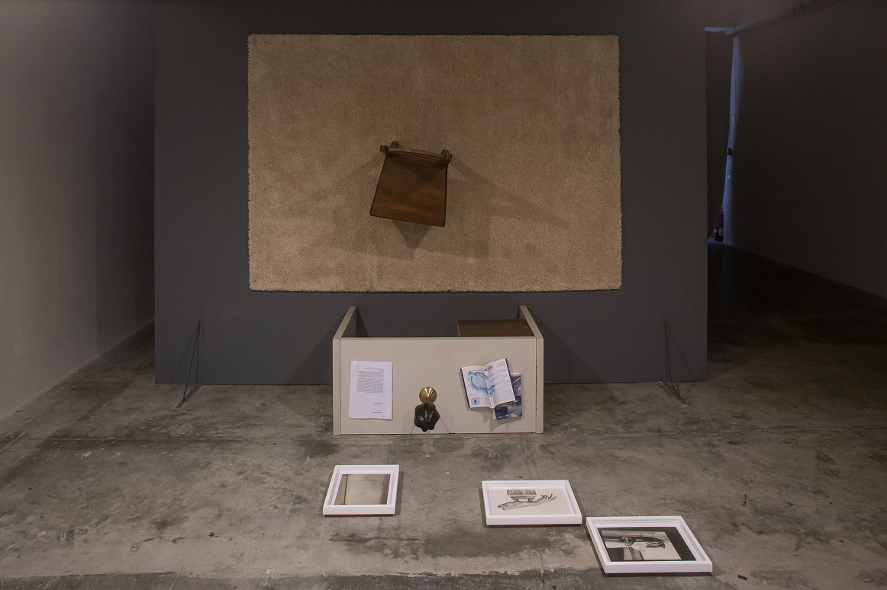
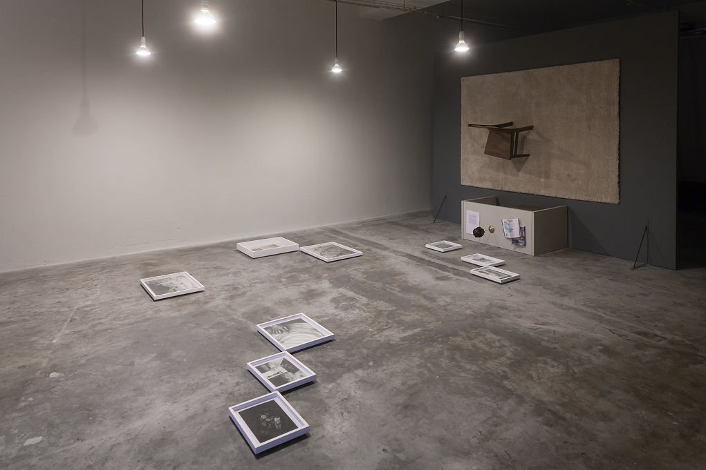

The exhibition takes the video work “You are nothing or everything to her” as its starting point, weaving together some of Candice Lin’s research, in dialogue with curator Valdívia Tolentino’s investigations. The video voices excerpts from personal correspondence exchanged between Lin and Tolentino from September to December 2014, weaving through various threads of thought. This voiceover is paired with imagery from each other’s travels and home environments—the locations from which they wrote each other—as well as images from their research from books, the internet, and film stills. In galleries 1 and 2, an installation, a series of drawings, photographic and traditional prints and a sculpture parallel the video, going beyond the staging of what is seen and heard from the personal letters. This creates different levels of interpretation.
The video is accompanied by an installation of domestic objects. A chair at a desk is floating on its side, as if the person seated there had just gotten up to get a glass of water. Displaced in time and space, the upended furniture is an empty stage set, exploring the notion of horizontality. Extending outward from the installation the display of two-dimensional works as floor sculptures disrupt the traditional vertical viewing of artworks in the gallery space, addressing Chris Marker’s idea that the Cape Verdeans are “a vertical people” and that the Other is seen as a slice of visually seductive, elusive but capturable emptiness to project one’s fantasies upon.
The exhibition takes its title from Alfred Hitchcock’s film Vertigo (1958) where the character Madeleine points to a cross-section of a tree on display and says, "Here I was born, and there I died. It was only a moment for you; you took no notice.” Echoing this, Lin and Tolentino met at The Jardin des Plantes in Paris to see the original Sequoia cross-section in the Museum of Natural History that features in Chris Marker’s other film La Jetée (1962). The quote parallels Tolentino and Lin’s earlier conversations about Graham Harman’s object-oriented ontology in that the subject Madeleine addresses is the dead tree, which in turn stands for a larger colonial metaphor of the inequities of power that create vertical fissures of invisibility, erasure, and lapsed memory. The quote is also transposed onto Sans Soleil and a postcolonial reading of the film, putting forward the idea of what different kinds of time or Time should be left out, as well as questions of permanence, history, and the power dynamics behind mattering.







CAAA Centro para os Assuntos da Arte e Arquitectura, Guimarães
24.10 — 6.12.2015
CAAA — Maria Luís Neiva
República Portuguesa Cultura
Direção-Geral das Artes,
Galeria Quadrado Azul
Valdívia Tolentino,
Luís Pinto Nunes,
Luís Albuquerque Pinho
João Messias
Candice Lin